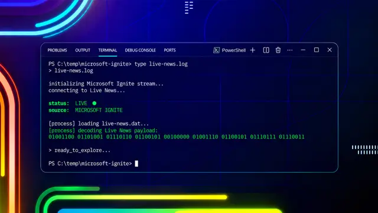

#microsoft
Microsoft Ignite 2026開幕：Copilotは「Autopilot」へ、自社モデルMAIとAIコスト管理を一斉投入

米Microsoftは2026年11月17日、年次カンファレンス「Microsoft Ignite 2026」（サンフランシスコ／オンライン、20日まで）を開幕しました。Copilotの刷新、常駐型エージェント「Autopilot」、自社開発モデル「MAI」シリーズ、AI支出を管理する「Agent 365」の新機能などを発表しています。チャットAIから、業務を自律的に動かすエージェント基盤へ軸足を移す姿勢がはっきり表れた内容です。なお、各発表の価格は公表されていません。
記事で取り上げている点
- Copilotの刷新：対話から自律実行へ
- Microsoft IQ：企業の知識をエージェントにつなぐ
- 自社モデルとFoundry
- AIコストの見える化とセキュリティ
- インフラ
一次情報（出典） news.microsoft.com